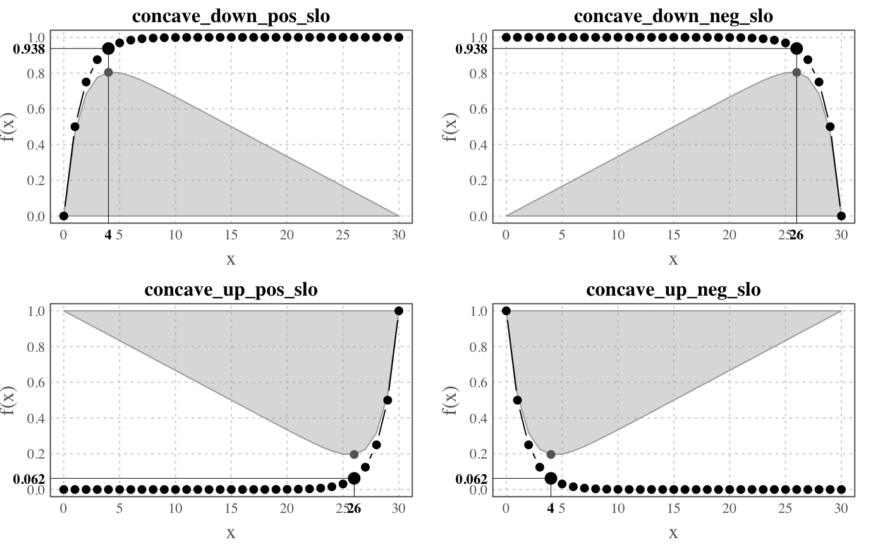

This function implements the Elbow (or knee of a curve) method to detect the inflection point of a concave curve. More information on this method: https://en.wikipedia.org/wiki/Elbow_method_(clustering).
elbow(data, plot = TRUE)
| data | a two-columns data frame (x and y respectively). |
|---|---|
| plot | a boolean. If TRUE (default) curves are plotted. |
This function returns a 2-elements list with:
the value on x-Axis corresponding to the inflection point
a data frame with the original data and two additional columns used in the graphic.
This function detects unique inflection point in a simple concave curve. The curve can be concave down/up with a positive/negative slope.
#> x concave_down_pos_slo concave_down_neg_slo concave_up_pos_slo #> 1 0 0.00000 1 9.313226e-10 #> 2 1 0.50000 1 1.862645e-09 #> 3 2 0.75000 1 3.725290e-09 #> 4 3 0.87500 1 7.450581e-09 #> 5 4 0.93750 1 1.490116e-08 #> 6 5 0.96875 1 2.980232e-08 #> concave_up_neg_slo #> 1 1.00000 #> 2 0.50000 #> 3 0.25000 #> 4 0.12500 #> 5 0.06250 #> 6 0.03125## Object returned ---- x <- elbow(profiles[ , c("x", "concave_down_pos_slo")], plot = FALSE) class(x)#> [1] "list"names(x)#> [1] "x_selected" "data"x$"x_selected"#> [1] 4## The four implemented profiles ---- curves <- colnames(profiles)[-1] par(mfrow = c(2, 2)) for (i in curves) { elbow(profiles[ , c("x", i)]) title(i) }